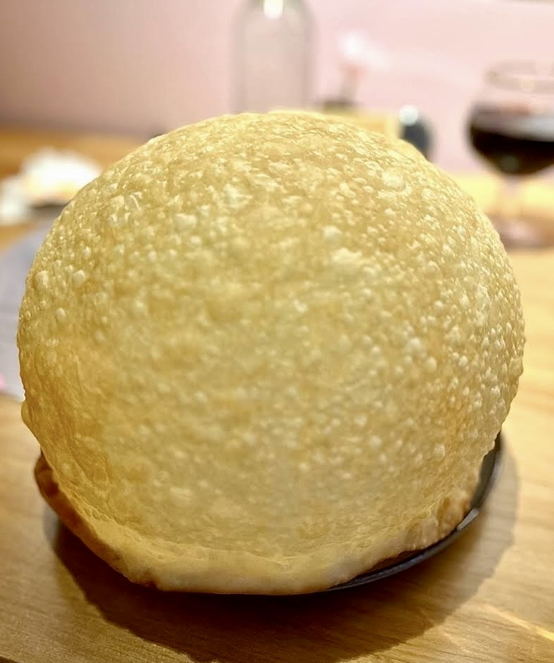
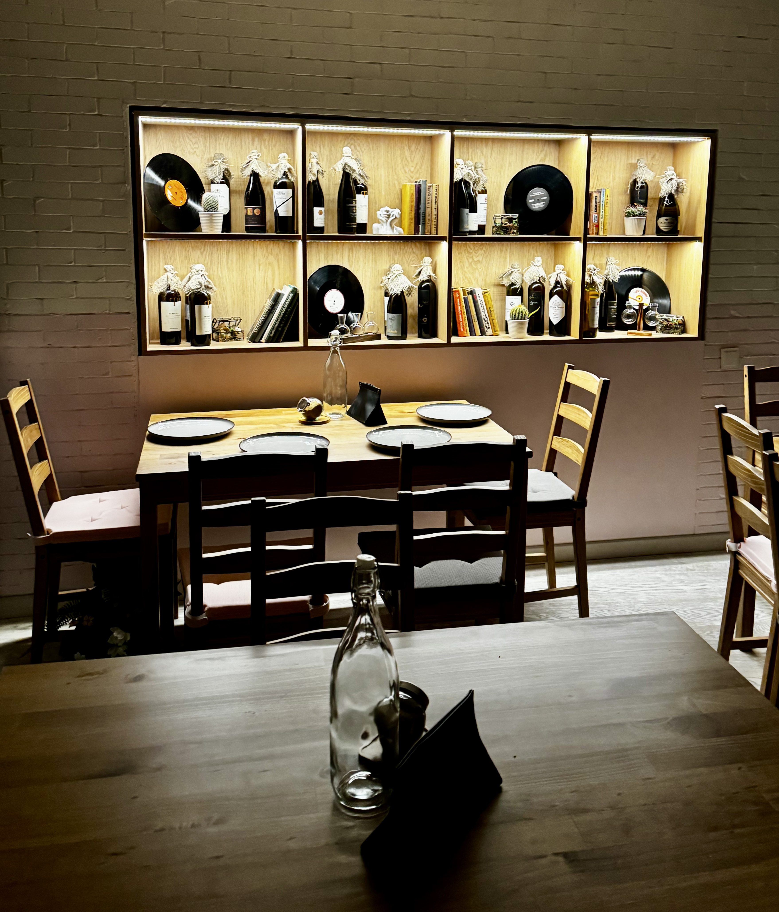
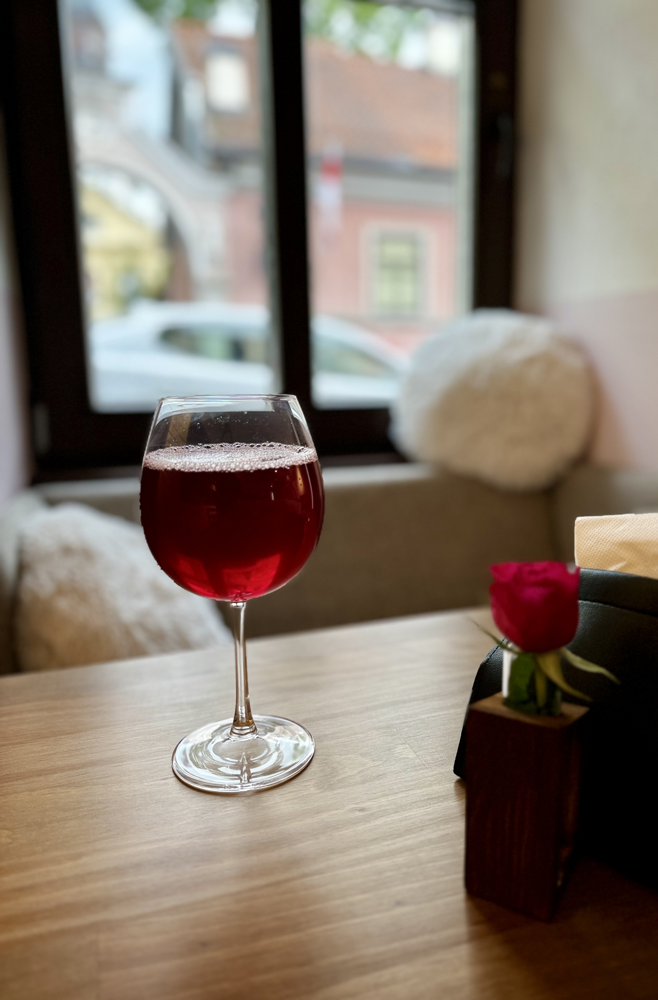
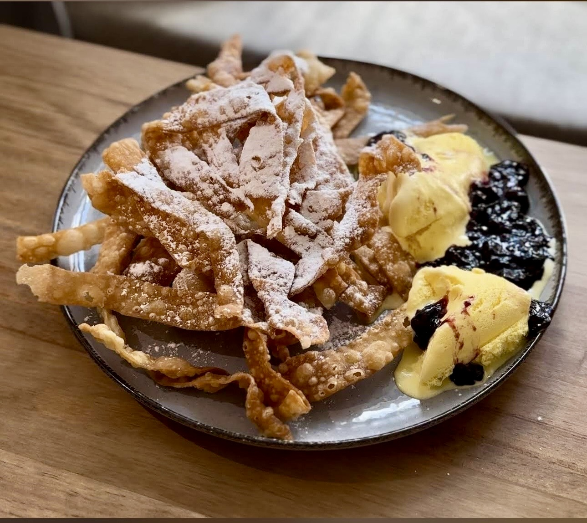
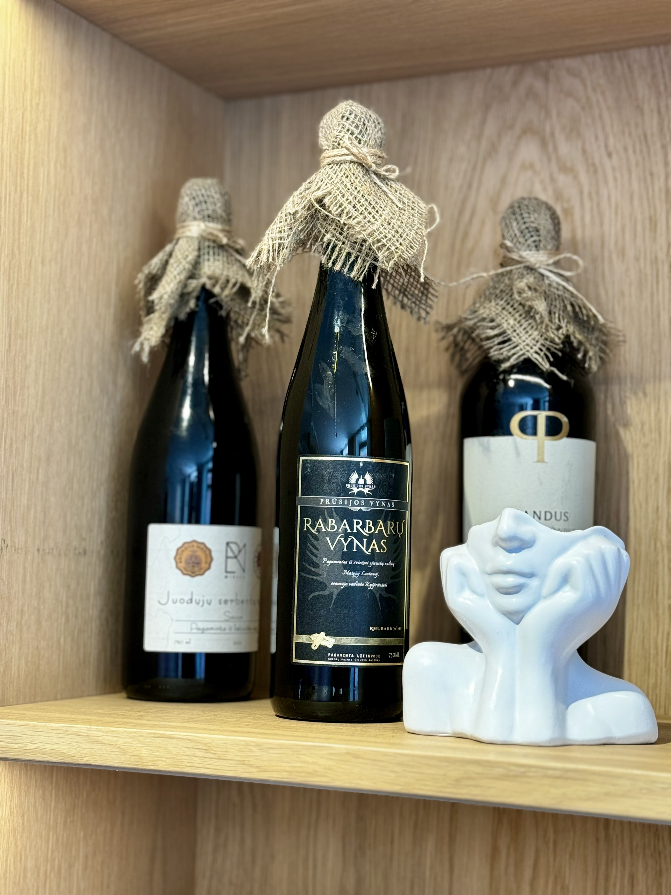

UŽUPIS • VILNIUS
Vynas ir čeburekai
Sveiki atvykę į Vynas ir čeburekai! Čia, pačioje jaukaus Užupio širdyje, mes kuriame ne tik maistą – mes kuriame skanius jausmus ir mažas džiaugsmo akimirkas.

Traškūs ir sotūs čeburekai
Vynas, alus ir naminiai gėrimai
Jauki vieta Užupio širdyje
Kasdien nuo 12:00 iki 23:00
Apie mus
Keletas publikacijų apie restoraną ir jo istoriją.
Galerija
Atmosfera, skoniai ir detalės.



